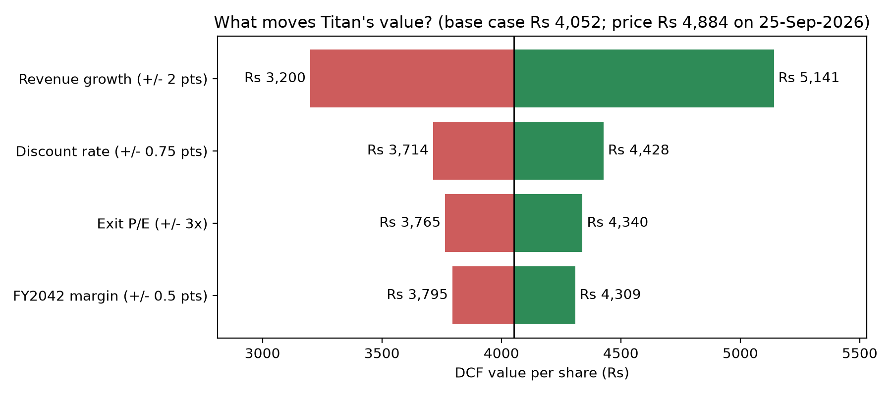

Titan Company: Equity Valuation and Risk Analysis
A discounted-earnings valuation of Titan Company (NSE: TITAN), built in Excel and rebuilt in Python. It adds a Monte Carlo simulation, a sensitivity (tornado) chart and a reverse valuation of the growth the share price implies.
₹4,052Base-case value per share
₹4,884NSE close, 25 Sep 2026
12.6%Revenue CAGR, FY2026–FY2042
₹4,036Monte Carlo median, 10,000 runs
- 16-year forecast, FY27 to FY42, with a 10.3% discount rate (10.26% cost of equity) and a 26.5x exit P/E.
- The base case is 17% below the market price. The 10,000-scenario Monte Carlo has a 90% range of ₹2,628 to ₹6,348, and 24% of runs land above the price.
- Limitations are stated in the README: it discounts net income rather than free cash flow, and 62.7% of the value is terminal value.


Student research for education only; not investment advice.
Options Pricer
Option pricing in Python, built from first principles and tested against theory, then applied to real NIFTY option prices from NSE.
36Unit tests, incl. Hull's worked examples
101NIFTY options solved for implied volatility
11.2%Implied vol at the forward
19.2%Implied vol, strikes 10% below
- Black-Scholes-Merton with the Greeks, a binomial tree for American options, and Monte Carlo simulation with variance reduction (antithetic variates).
- An implied volatility solver using Brent's method, applied to NSE closing prices on 25 Sep 2026.
- The smile shows the market paying up for protection against a fall: 11.2% at the forward, 19.2% for strikes 10% below it.